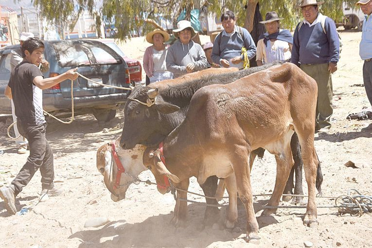

Estadísticas
En conferencia de prensa la Federación de Ganaderos de Santa Cruz presentó de manera oficial un documento muy importante, que denominaron PORTAFOLIO ESTADÍSTICO DEL SECTOR GANADERO BOVINO BOLIVIANO – 2020, realizado con esfuerzo de la Federación de Ganaderos de Santa Cruz (FEGASACRUZ), con la cooperación de la Fundación AGRITERRA de Holanda, mediante el Consultor Designado Saúl Molina Gómez profesional experto en este tipo de trabajo de la Entidad Ganadera.
El material elaborado será de gran utilidad para entidades públicas y privadas, en la definición de estrategias, políticas y acciones en beneficio del sector ganadero en general, según declaró el Vicepresidente de Fegasacruz, Walter Ruiz.
